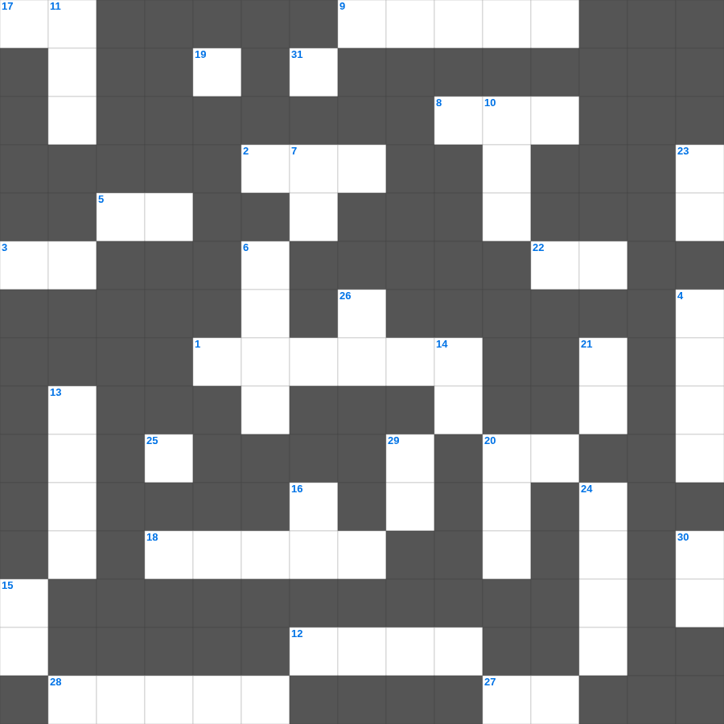

창세기 마스터 100
📌 서비스 정의
십자가로세로는 교회 주보와 주일학교에서 사용할 수 있는 성경 기반 가로세로 퍼즐 서비스입니다. 성경 인물, 사건, 핵심 구절을 바탕으로 제작되었습니다. 온라인 풀이 및 인쇄 기능을 제공합니다.
📖 창세기란?
창세기는 성경의 첫 번째 권으로, 하나님이 세상을 창조하신 이야기로 시작합니다. 아담과 하와, 노아의 방주, 아브라함과 이삭, 야곱과 요셉의 이야기를 포함하며 이스라엘 민족의 기원을 다룹니다. 창세기는 총 50장으로 구성되어 있으며, 천지창조부터 요셉의 이집트 생애까지를 기록합니다.
📚 창세기의 주요 사건·주제
천지창조와 에덴동산 · 노아의 홍수와 방주 · 바벨탑 사건 · 아브라함의 언약 · 야곱과 요셉의 이야기
창세기의 말씀을 퀴즈로 배우는 창세기 성경 퍼즐입니다. 가로 힌트와 세로 힌트를 보고 35개의 단어를 맞춰보세요. 인쇄도 가능하고 정답 확인도 바로 되니 소그룹 모임이나 가정 예배 시간에도 활용하실 수 있습니다.

📝 가로 힌트
1. 이방 여인과 결혼한 죄를 듣고 에스라가 보인 반응
2. 여호와께서 내 음성과 내 이것을 들으시므로 내가 그를 사랑하는도다
3. 그 작은 자가 천 명을 이루겠고 그 약한 자가 이것을 이룰 것이라
5. 요한이서 1장 12절: 무엇으로 쓰기를 원하지 않았나 (2가지 중 하나)
7. 여호와의 길은 회오리바람과 광풍에 있고 이것들은 그의 발의 티끌이로다
8. 너희가 나가서 외양간에서 나온 이것 같이 뛰리라
9. 베드로후서 1장 3절: 우리를 부르신 이를 앎으로 말미암아 무엇을 주셨나
12. 에스라가 아하와 강가에서 멈춰 선 이유 '이 지파가 없어서'
17. 느헤미야가 기한을 정하고 예루살렘에 가기 위해 왕에게 구한 것
18. 백성들이 율법을 깨닫도록 도와준 사람들
20. 다메섹에 대하여 이르시되 이것이 약하여져서 몸을 돌이켜 달아나려 하니
22. 니느웨 사람들이 하나님을 믿고 이것을 선포하고... 굵은 베 옷을 입은지라
25. 너희 믿음의 확실함은 이것으로 연단하여도 없어질 금보다 더 귀하여
27. 사람이 교만하면 낮아지게 되겠고 마음이 겸손하면 이것을 얻으리라
28. 에스라가 왕 앞에 나아갈 때 한 고백 '죽으면 이것하리이다'
31. 그가 그의 말씀을 보내어 그것들을 녹이시고 바람을 불게 하신즉 이것이 흐르는도다
📝 세로 힌트
4. 내가 또 주의 목소리를 들으니 주께서 이르시되 내가 누구를 보내며 누가 우리를 위하여 갈꼬 하시니 그 때에 내가 이르되 내가 여기 있나이다 나를 이것 하소서
5. 야곱아 이스라엘아 이 일을 기억하라 너는 내 이것이니라
6. 바벨론 왕이 유다 총독으로 세웠으나 살해당한 인물
7. 믿고 세례를 받는 사람은 이것을 얻을 것이요 믿지 않는 사람은 정죄를 받으리라
7. 여호와는 나의 빛이요 나의 이것이시니 내가 누구를 두려워하리요
10. 청년 남녀와 노인과 이것들아 여호와의 이름을 찬양할지어다
11. 에스라 1장에서 고레스가 돌려준 금반반은 몇 개인가
13. 천국에서는 누가 큰 자니이까... 너희가 돌이켜 이것들과 같이 되지 아니하면
14. 계시록 17장: 일곱 머리와 열 뿔을 가진 짐승 위에 앉은 존재
15. 제사장의 직분을 더럽힌 자들을 하나님이 이것하시기를 구함
16. 베드로후서 2장 15절: 브올의 아들로 불의의 삯을 사랑한 선지자
19. 시몬아 보라 사탄이 너희를 이것 까부르듯 하려고 요구하였으나
20. 하나님이 십일조를 통해 열어주시겠다고 약속하신 곳
21. 너희의 단장은 머리를 꾸미고 금을 차고 아름다운 옷을 입는 이것으로 하지 말고
23. 너희는 악을 미워하고 선을 사랑하며 성문에서 이것을 세울지어다
24. 너는 내일 일을 자랑하지 말라 하루 동안에 무슨 일이 일어날지 네가 이것함이니라
26. 구하는 이마다 받을 것이요 찾는 이는 이것 것이요
29. 유다서 1장 7절: 다른 육체를 따라 가다가 영원한 불의 형벌을 받아 이것이 되었느니라
30. 베드로후서 1장 21절: 예언은 누구의 감동으로 기록되었나
📖 함께 읽으면 좋은 성경사전
퍼즐을 풀기 전에 읽으면 힌트가 쉬워지고, 풀고 나서 읽으면 내용을 한 번 더 복습할 수 있습니다.
🧩 이 퍼즐에서 배우는 내용
이 퍼즐은 창세기 마스터 100의 핵심 단어와 개념을 자연스럽게 복습할 수 있도록 구성되었습니다. 주일학교 수업이나 개인 성경공부에서 학습 내용을 점검하는 용도로 바로 활용할 수 있습니다.
🧑🏫 교회 교육 자료 활용
이 퍼즐은 주일학교 교재 추천 자료로 활용할 수 있고, 주일학교 주보에 넣기 좋은 분량으로 구성되어 있습니다. 수업용 주일학교 교안에 활동지로 붙이거나, 예배 후 복습용 주일학교 공과교재로 바로 사용할 수 있습니다.
🏷️ 키워드
창세기 성경 퍼즐, 창세기, 십자가로세로, 성경퀴즈, 말씀퀴즈, 가로세로퍼즐, 주일학교 교재 추천, 주일학교 주보, 주일학교 교안, 주일학교 공과교재